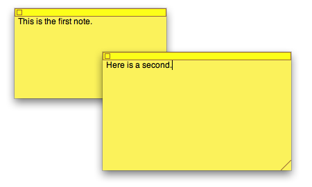

Please note: this article is part of the older "Objective-C era" on Cocoa with Love. I don't keep these articles up-to-date; please be wary of broken code or potentially out-of-date information. Read "A new era for Cocoa with Love" for more.
Serving an NSManagedObjectContext over an NSConnection
In this post, I'll show you how you can serve a Core Data document over a network using NSConnection. This arrangement will never be as efficient or safe as writing your own code to communicate the data over the network but the promise of transparent and automatic networking seemed too tempting to pass up.
NSConnection and NSManagedObjectContext
NSConnection is an often forgotten tool in the Foundation toolbox which allows messages to be sent from local objects to remote objects (in another process or on another machine). Once set up, it works almost transparently, especially when you keep the data sent over the NSConnection small and simple.
NSManagedObjectContext manages the data graph read from a Core Data persistent store (normally an SQLite database). It handles huge amounts of complex data.
Other than their shared presence in Cocoa, these classes don't have much common ground. However, they seem like they should produce the Holy Grail of network computing: complex object management transparently served and managed over a network.
Of course, it won't be easy: these APIs aren't likely to be sympathetic to each other. In fact, it's probably just a bad idea.
The sample app
I'm going to present a variation on Apple's Core Data Stickies sample app (the original is installed by the Developer Tools at /Developer/Examples/Core Data/Stickies/).
Stickies look like this:
Download the finished ClientServerStickies Xcode 3.1 project (92kB).
There are two versions of the program: a client and a server. The server will host the NSManagedObjectContext and any number of client may connect to it.
Both client and server will continue to look like the original Stickies app, the only difference is that the server contains the only copy of the data and the note information is shared to each client over a network connection.
Since the position of each note is shared, if you run the client and server on the same machine, the windows will be positioned on top of each other. Hide either the client or the server to check the other.
Setup
I've taken the Stickies project and duplicated the target, splitting it into a Server and Client target. The Server has the C preprocessor macro STICKIES_SERVER defined, so code differences between the two will be wrapped in #ifdefs using this macro. They also use different Info.plist files (to keep their CFBundleIdentifiers different) but are otherwise the same.
To run the project, you must build both targets and always start the server before the client.
Getting started: sharing the NSManagedObjectContext
The first step is to get the client and the server using the same NSManagedObjectContext. For this, we modify the managedObjectContext method in StickiesAppDelegate.m
The server version remains the same until immediately before the return line, we add:
NSSocketPort *port =
[[[NSSocketPort alloc] initWithTCPPort:STICKIES_SERVER_PORT] autorelease];
NSConnection *theConnection =
[[NSConnection connectionWithReceivePort:port sendPort:nil] retain];
[theConnection setDelegate:self];
[theConnection setRootObject:managedObjectContext];This is all we need to share the NSManagedObjectContext.
For the client, we remove all the context creation code, leaving:
@try
{
NSSocketPort *port =
[[[NSSocketPort alloc]
initRemoteWithTCPPort:STICKIES_SERVER_PORT host:@"127.0.0.1"]
autorelease];
NSConnection *theConnection =
[[NSConnection connectionWithReceivePort:nil sendPort:port] retain];
[theConnection setDelegate:self];
managedObjectContext =
(NSManagedObjectContext *)[[theConnection rootProxy] retain];
}
@catch (NSException *e)
{
[[NSAlert
alertWithMessageText:@"Connection error"
defaultButton:nil
alternateButton:nil
otherButton:nil
informativeTextWithFormat:
@"Server not found. Application will terminate."]
runModal];
[NSApp terminate:self];
}This connects to the vended NSManagedObjectContext and uses it remotely.
You can see here that I've hard-coded 127.0.0.1 (the localhost). If you want to actually use over a network, you can change this or publish using NSNetService if you're properly ambitious. Clearly, I'm not.
That was great! And so simple. Does it work? Of course not.
What is NSKnownKeysDictionary1?
To work over an NSConnection an object must be encodeable by an NSPort. Almost everything can be encoded by the default NSPortCoder. Of course, I use the word "almost" because there are some things which can't be encoded. Generally, void * and pointers to pointers can't be encoded. In your own code, you can implement substitutions for the port coder to make it work.
But Foundation is not my code, so when the return value from entitiesByName refuses to encode because its subclass of NSDictionary is too weird to be encoded, I have to take different measures. The following delegate method replaces this weird return with something more normal that will journey over the NSConnection.
- (BOOL)connection:(NSConnection *)conn
handleRequest:(NSDistantObjectRequest *)doReq
{
NSInvocation *invocation = [doReq invocation];
[invocation invoke];
if ([invocation selector] == @selector(entitiesByName))
{
id retVal;
[invocation getReturnValue:&retVal];
NSDictionary *rebuilt = [NSDictionary dictionaryWithDictionary:retVal];
[invocation setReturnValue:&rebuilt];
}
[doReq replyWithException:nil];
return YES;
}This is a delegate method for the NSConnection. In this case, it will intercept the return results from entitiesByName (when this message is sent to an object on the server-side) and replace it with a clean and normal NSDictionary, not the unfriendly NSKnownKeysDictionary1 oddball.
Don't have the model create the view. Really.
If you run the program using only the changes listed so far, the client won't show any windows.
This is because the windows for the Stickies are created in Sticky.m in methods that are part of the Sticky class. This is the NSManagedObject subclass for the Sticky entity in the model. Like everything in the NSManagedObjectContext, it only exists on the server — so the server will have windows but the client wont.
I'm not sure what the poor, overworked code-monkey that wrote this was thinking but you shouldn't write a program like this. The model should never create its view; a controller should.
The NSArrayController fetches the Stickies for each client. To fix the creation of windows, we need something that watches the NSArrayController and creates the windows correctly on the client side when new objects are added to its arrangedObjects.
All of the code that was in Sticky.m is pulled out and put into StickyWindowController.m. We can then have multiple window controllers for the same underlying data object — one window controller per client and one for the server.
I've put the code that creates the window controllers into the StickiesAppDelegate. This isn't the most sensible place for it but the NSArrayController is already connected to this class in the sample so I'm working with what I have.
Replacing the old applicationDidFinishLaunching: and adding synchronization methods gives:
- (void)applicationDidFinishLaunching:(NSNotification *)notification
{
stickyWindowControllers = [[NSMutableArray alloc] init];
[stickiesController
addObserver:self
forKeyPath:@"arrangedObjects"
options:NSKeyValueObservingOptionNew
context:nil];
}
- (void)syncWithStickiesController
{
NSSet *newArrangedObjects =
[NSSet setWithArray:[stickiesController arrangedObjects]];
NSSet *oldArrangedObjects =
[NSSet setWithArray:[stickyWindowControllers valueForKey:@"sticky"]];
NSMutableSet *createdObjects = [NSMutableSet setWithSet:newArrangedObjects];
[createdObjects minusSet:oldArrangedObjects];
for (NSManagedObject *sticky in createdObjects)
{
[stickyWindowControllers addObject:
[[[StickyWindowController alloc]
initWithSticky:sticky]
autorelease]];
}
for (StickyWindowController *stickyWindowController in
[NSArray arrayWithArray:stickyWindowControllers])
{
if ([oldArrangedObjects containsObject:[stickyWindowController sticky]] &&
![newArrangedObjects containsObject:[stickyWindowController sticky]])
{
[stickyWindowController close];
[stickyWindowControllers removeObject:stickyWindowController];
}
}
}
- (void)observeValueForKeyPath:(NSString *)keyPath ofObject:(id)object
change:(NSDictionary *)change context:(void *)context
{
if ([keyPath isEqualTo:@"arrangedObjects"])
{
[self syncWithStickiesController];
}
}Two problems with NSArrayController remain
The last two issues I had to address were related to the NSArrayController not actually being in the same process as the NSManagedObjectContext to which it is connected.
The NSArrayController lives on each client but it is asked to create new Sticky entities, which must live on the server. When it tries to allocate them on the client, it fails. In a more general sense: how do we create new NSManagedObjects on the server from the client side?
The second problem is that NSArrayController listens for new or deleted objects in the context through NSNotifications. The NSManagedObjectContext only sends these to the NSNotificationCenter on the server. So the NSArrayController isn't receiving change notifications for the Stickies.
To solve the first problem, I extend NSManagedObject on the client to intercept attempts to create objects and bounce these client-side requests to be performed on the server.
On the server, I listen for the same notifications that NSArrayController needs and forward them to each of the clients.
All of this is bundled up in the following code:
#ifdef STICKIES_SERVER
@implementation NSManagedObjectContext (ServerRedirection)
- (id)remotelyAllocateWithEntity:(NSEntityDescription *)entity
{
NSEntityDescription *localEntity = [entity valueForKey:@"self"];
return [[NSManagedObject alloc]
initWithEntity:localEntity insertIntoManagedObjectContext:self];
}
- (void)forwardContextChangeNotificationsTo:(id)receiver
{
[[NSNotificationCenter defaultCenter]
addObserver:receiver
selector:@selector(forwardNotification:)
name:@"_NSObjectsChangedInManagingContextPrivateNotification"
object:self];
}
@end
#else
@implementation NSManagedObject (ServerRedirection)
- (id)initWithEntity:(NSEntityDescription *)entity
insertIntoManagedObjectContext:(NSManagedObjectContext *)context
{
return [context remotelyAllocateWithEntity:entity];
}
@end
#endifTo make the forwarding work, the client needs to invoke forwardContextChangeNotificationsTo: on the remote NSManagedObjectContext object, passing in itself, and then implement the forwardNotification: method to send the notification method to the local NSNotificationCenter.
Conclusion
You can download the finished ClientServerStickies Xcode 3.1 project (92kB).
I hope this post has shown some of the quirks associated with vending arbitrary objects over an NSConnection to achieve networking.
There are at least a few (possibly many) issues remaining. One of these is that if a client quits without explicitly calling removeObserver:forKeyPath: on any observed server objects, the server will crash if it later tries to send the observation. To fix this, you'd need to track all observations established over the NSConnection and remove them yourself in the case of abrupt client disconnection.
This setup is also verbose, with lots of small messages getting sent forwards and backwards. Not a problem when runnning on the local host or over a local network but I don't think you'd want to run this over the broader Internet.
Heterogeneous cells in a UITableViewController
Multiple row selection and editing in a UITableView